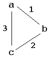

In general, we are interested in two properties of logic meta-interpreters for normal programs.
If an answer produced by npl has free variables in it then the correctness of such an answer means that each grounding of those variables produces an evident answer for the goal.
Example. Consider the normal program
and the npl goalp(a). q(b).
The answer substitution s = {X/a,Y/G680} is considered as correct, but it should be taken as meaning that Y could be any value in domain(P) = {a,b}.?- why(p(X)|p(Y)). |-- p(a) | P(G680) |-- p(a) |-- true Y = G680 X = a
We could have originally given a (more complicated) definition for an evident answer substitution that allowed free variables.
Meta-interpreters like npl can be counted on as having evidentiary correctness because these meta-interpreters are designed to actually construct the required clause trees.
Exercise 1. Argue informally, using careful inspection of the source code for npl, that if and when npl has finished computing an answer it has actually constructed a bonafide clause tree and therefore computed an evident answer (provided free variables in npl's answers are considered appropriately, as mentioned above). The specification to inspect is that given previously for ctie (the clause tree inference engine), which was designed to grow these trees incrementally.
Notice carefully that evidentiary soundness is different than the usual concept of logical soundness, which would require that the answers computed should be logical consequences of the program. Logical soundness of the meta-interpreter is a concept that would really only make sense if the normal program is known to be consistent.
Exercise 2. Show that evidentiary correctness implies logical soundness. Give some sample programs to show that evidentiary correctness is a strictly stronger condition than logical soundness. What kind of programs do these examples have to be?
The second important property for a normal logic meta-interpreter is called evidentiary completeness. There are varying degrees of evidentiary completness. As an acceptor (Yes/No) algorithm the meta-interpreter should say Yes when given a ground normal goal G for which there exists a closed clause tree rooted at G; and otherwise the meta-interpreter should answer No. For the npl meta-interpreter this means that the Prolog goal npl(G) would yield yes in the former case, No in the latter.
As an answer generator, varying degrees of completeness would result depending on how many answers the meta-interpreter would give for normal goals with variables. The best that one can hope for is that the meta-interpreter would find all possible values for the variables in the goal.
A normal program is recursive if the collection of contrapositive clauses contra(P) is recursive.
Exercise 3. Give a formal definition of a recursive normal program, with all of the details. This takes some careful formulation even though the concept is fairly straightforward. (Hint: You know what a recursive Prolog program is, even though it has not be formally defined in the tutorial!)
Exercise 4. Show, using a variety of examples of nonrecursive normal programs, that npl can generate all possible answers, but that, even when it does, it still might generate many repeated answers. Use Prolog goals like ?- bagof(answer_list, npl(G), S) where answer_list is a list of the variables in G; e.g., if G is p(X,Y) then answer_list would be [X,Y].
However, normal programs with recursion can cause uncontrolled looping, and consequent nonterminating behavior for the meta-interpreter.
Here is a simple normal program that can give npl a lot of trouble. The student should follow along by trying all of the sample executions.
Example P3. Suppose that we have a little road map with towns a,b and c, and connecting roads 1,2, and 3.

Suppose that roads connecting towns are either ok to travel or not. Consider the normal program
Read the 7th clause as intending to say that at least one of road 1 or road 2 is ok. The 9th and 10th clause give a familiar looking declaration for being able to go from one town to another. Load P3 into npl and try some goals...connects(a,b,1). connects(b,a,1). connects(b,c,2). connects(c,b,2). connects(a,c,3). connects(c,a,3). ok(1) | ok(2). ok(3). go(X,Y) :- connects(X,Y,R), ok(R). go(X,Z) :- connects(X,Y,R), ok(R), go(Y,Z).
?- [npl].
...
?- know('p3.npl'). %%% The file holding P3
?- why(go(a,b)).
|-- go(a, b)
|-- connects(a, b, 1)
|-- true
|-- ok(1)
|-- ~ ok(2)
|-- ~ go(c, b)
|-- ~ go(a, b)
|-- ancestor resolution
|-- connects(a, c, 3)
|-- true
|-- ok(3)
|-- true
|-- connects(c, b, 2)
|-- true
?- why(go(b,a)).
...
The second goal given will not terminate. The npl meta-interpreter trys
to match goals left-to-right (like Prolog). An examination of contra(P3)
will help indicate why. In particular, note that the contrapositive
is left-recursive (without first binding C). Also, the contrapositive~go(A, B) :- ~go(C, B), connects(C, A, D), ok(D).
introduces new variables in the body that would not have been bound in the head.~ok(A) :- ~go(B, C), connects(B, D, A), go(D, C).
Exercise 5. Draw a diagram to trace how npl tries to construct a clause tree having root go(b,a). (Prolog's trace may be of some help.) Try to show how the left-recursiveness and the late binding cause looping.
As example P3 shows, it is easy to create simple, interesting normal programs for which npl, or any similar meta-interpreter, will be computationally incomplete: That is, the meta-interpreter will not be able to confirm or generate all possible evident answers. Various methods can be used to pry out answers, such as grounding and reordering of goals, as illustrated for P3.
One can modify contra(P3) to try to aleviate the problems that we have mentioned. To save a file for contra(P3), use the following ...
?- [npl].
...
?- know('p3.npl').
Yes
?- tell('p3.c'), show, told.
...
The last goal will write the clauses in contra(P3) to the file 'p3.c',
where we have used extension 'c' to indicate "contrapositives".
Now edit the file p3.c to effect the following changes ...
%% p3.cgThe edit changes have been highlighted in red. Save this file as p3.crg, the 'r' for reordering and the 'g' for "grounding".
%%%% for grounding %%%%%
town(a).
town(b).
town(c).
%%%%%%%%%%%%%%%%%%%%%%%%%
connects(a, b, 1).
connects(b, a, 1).
connects(b, c, 2).
connects(c, b, 2).
connects(a, c, 3).
connects(c, a, 3).
ok(1) :- ~ok(2).
ok(2) :- ~ok(1).
ok(3).
go(A, B) :-
connects(A, B, C),
ok(C).
go(A, B) :-
connects(A, C, D),
ok(D),
go(C, B).
~connects(A, B, C) :-
~go(A, B),
ok(C).
~ok(A) :-
connects(B, C, A), %% reordered body
~go(B, C).
~connects(A, B, C) :-
~go(A, D),
ok(C),
go(B, D).
~ok(A) :-
connects(B, D, A), %% reordered
town(C), %% grounding added
~go(B, C),
go(D, C).
~go(A, B) :-
connects(C, A, D), %% reordered
~go(C, B),
ok(D).
Note that we have informally introduced two static proof strategies. They are "static" because one simply modifies the normal program given to the meta-interpreter rather than modify the meta-interpreter itself (see below). The reordering strategy reorders subgoals in the bodies of clauses in contra(P).. The grounding strategy forces grounding explicitly before a subgoal is attempted. As in our example, these two strategies are closely related. Both strategies, in effect, try to delay a goal until after more of its variables have been bound. This avoids the generation of more and more subgoals with new variables.
Exercise 6. Argue informally that the modified contra(P3) (red changes) and the original contra(P) can be used to make exactly the same clause trees, and hence produce exactly the same evident answers, except for what? That is, what goals for the modified contra(P) have answers that the original did not? and why?
Note: The following experiment was originally performed using SWI Prolog (which automatically loads clauses dynamically). This will not work without modification using the XSB system.
To use the modified contra(P3) rather than those generated using know('p3.npl'), restart npl (or be sure to forget p3.npl) and use an ordinary Prolog load to load the modified contrapositves in contra(P3) ...
?- ['p3.cg'].The looping for go goals is eliminated by the modifications we have made. Be sure to do the following exercise.
Exercise 7. Using p3.cg as above, try all of the goals why(go(a,b)), why(go(b,a)), why(go(b,c)), why(go(c,c)), etc. Show that npl can confirm all of these ground goals. How about generating all answers with a goal like npl(go(X,Y)) or why(go(X,Y))?
Exercise 8. Make necessary modifications so that this experiment can be performed using the XSB system.
Exercise 9. (Project) Explore using XSB's tabling mechanism to avoid loops in npl. Is there any way to use tabling to also reimplement npl's ancestry resolution? Click the following link for the XSB homepage ...
Other approach to avoiding loops could result from modifing the meta-interpreter npl itself. This gives various dynamic strategies, so called because they come into play while the meta-interpreter in executing. Another version of npl could dynamically reorder subgoals. This is, however, very hard to implement, and we do not pursue this here.
Another dynamic kind of strategy that come from the field of mechanical theorem proving is called a subsumption strategy. One simple goal G1 subsumes another simple goal G2 provided that G2 is an instance of G1. This means that some substitution (possibly empty) must be applied to G2 in order to produce G1. The dynamic forward subsumption strategy avoids continuing with goals that are subsumed by an ancestor, and the backward subsumption strategy avoids continuing with goals that subsume some ancestor. For npl, to avoid continuing would mean to fail the goal in question, and thus continue with some other alternatives or choices. (In general, the actual control mechanism depends on the details of the design of the meta-interpreter.) Both of these strategies sometimes produce more, or new, answers, compared to what could be computed without the strategies in force. But both strategies are known to sometimes prevent the computation of answers that were possible without the strategies being in force.
Exercise 10. (Project) Implement subsumption, and add it as a feature of npl. One must be careful that the subsumption test does not bind variables in the subgoal. Make it so that subsumption can be turned on or turned off before an npl query. Use the modified npl program on some recursive programs to get answers not possible without subsumption. On the other hand, show that subsumption can block getting some answers for some programs.
Are there programs for which npl would be complete? Yes...
| The meta-interpreter npl will be complete, both as an acceptor and as a generator for nonrecursive normal programs. |
Exercise 11. Argue informally that the result displayed above is correct. Actually, how deep can a clause tree for a nonrecursive normal program be?
Nonrecursiveness is a very severe restriction, and completeness will obtain for many kinds of recursive programs also. We do not pursue details here. But it would be impossible to obtain a general completeness result for logic meta-interpreters. A general completeness result for meta-interpreters for normal programs would imply a general decision procedure for all computation, which the student may know can be proved not to be possible.